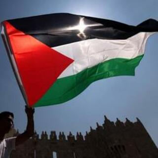
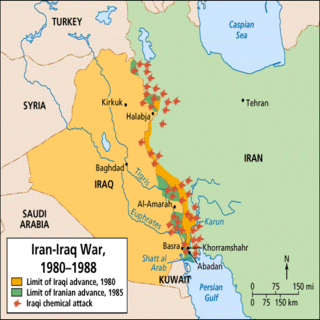
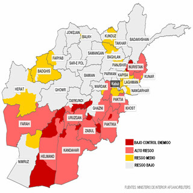
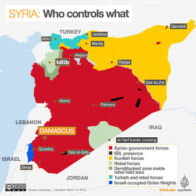
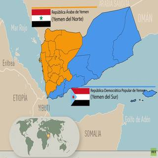

Conflictos de Oriente Medio
El Medio Oriente es un lugar atestado de conflictos, tales como guerras civiles, inestabilidad política, invasiones extranjeras, disputas de control sobre territorios llenos de recursos naturales o terrorismo.
Sin embargo, ¿cómo se ha llegado a este punto? ¿Por qué esta zona tan inhóspita pero tan rica en recursos ha llegado a tal punto de inestabilidad?
En esta página, revisaremos algunos de los conflictos más destacados de esta región durante la historia reciente.

|  Conflicto Palestina-Israel |
 Guerra Irán-Irak |
 Invasión de Afganistán |
|  Guerra civil siria |
 Guerra civil yemení |